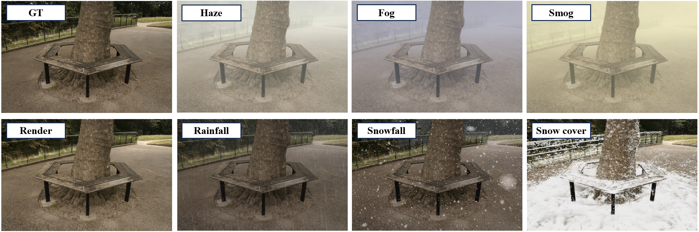

- Chen Sang
- Yeqiang Qian
- Jiale Zhang
- Ming Yang
- Shanghai Jiao Tong University
Abstract
For tasks such as urban digital twins, VR/AR/game scene design, or creating synthetic films, the traditional industrial approach often involves manually modeling scenes and using various rendering engines to complete the rendering process. This approach typically requires high labor costs and hardware demands, and can result in poor quality when replicating complex real-world scenes. A more efficient approach is to use data from captured real-world scenes, then apply 3D reconstruction and rendering algorithms to quickly recreate the authentic scene. However, current algorithms are unable to effectively reconstruct and render real-world weather effects. To address this, we propose a framework that can reconstruct real scenes and render them under synthesized weather effects. Our work can simulate various common weather effects by applying Gaussians modeling and rendering techniques. It supports continuous dynamic weather changes and can easily control the details of the effects. Additionally, our work has low hardware requirements and achieves real-time rendering performance.

Weather simulations
Each scene has five weather simulation results. You can alter the weather types and scenes from the options below.
Weather
Scene
Weather details
The specific weather effects can be altered through simple adjustments to various parameters. These adjustable effects include, but are not limited to: the intensity of fog, the amount of rainfall and snowfall, and the extent of snow accumulation in the scene. By adjusting the color of the weather, a transition from fog to smog can be achieved, and snow accumulation can be transformed into dust accumulation.
Extra results
Simulation Pipeline
Our method for weather simulation is simple and straightforward. The foundation of everything begins with training the original scene with 3D Gaussian splatting. This allows us to obtain three intermediate outputs: the rendered RGB image of the scene, the rendered depth map, and the Gaussian normal vectors. By inputting these three outputs into different stylization modules, we can simulate the desired weather effects.
The effects for haze, fog, and smog are generated by calculating a blur mask based on the depth map and overlaying it onto the RGB image. We can freely adjust the overall style intensity by controlling a single parameter.
For the noise of falling snow and rain, we model and generate a Gaussian scene made entirely of noise gaussians, which are then overlaid onto the original scene based on transparency. Since we can accurately access the properties of each noise gaussian, we can achieve dynamic and coherent falling effects in videos. Parameters such as falling intensity can also be dynamically adjusted.
The effects for haze, fog, and smog are generated by calculating a blur mask based on the depth map and overlaying it onto the RGB image. We can freely adjust the overall style intensity by controlling a single parameter.
For the noise of falling snow and rain, we model and generate a Gaussian scene made entirely of noise gaussians, which are then overlaid onto the original scene based on transparency. Since we can accurately access the properties of each noise gaussian, we can achieve dynamic and coherent falling effects in videos. Parameters such as falling intensity can also be dynamically adjusted.
Additionally, we have designed a method for simulating snow accumulation. This is a simple three-step process: first, snow positions are initialized based on the scene's normal vectors; second, we attempt to fit local planes to the snow points and filter outliers; finally, random point interpolation is performed on the fitted planes to densify the snow Gaussians. Combined with snowfalling effect, we can create a more realistic snow scene. By adjusting the initialization threshold, we can also control the extent of snow accumulation.